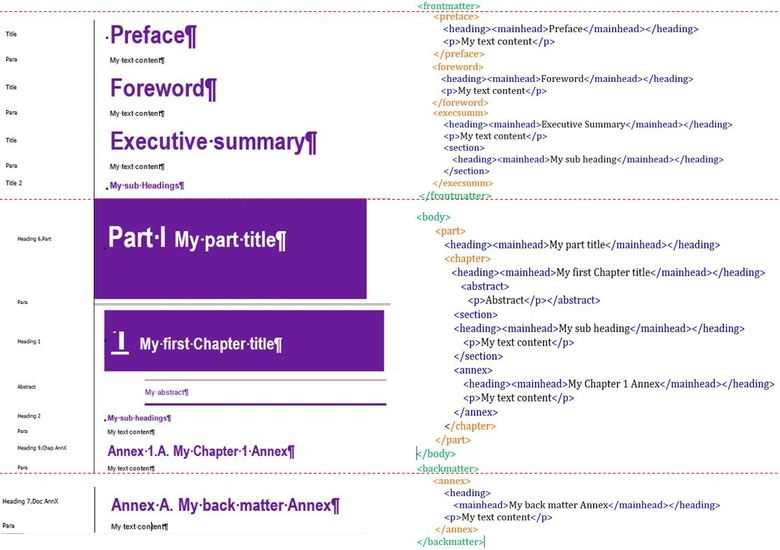

Understanding the structure of O.N.E Author
What qualifies as a well-structured and high-quality manuscript?
When working in O.N.E Author, you apply styles to multiple elements (titles, abstracts, paragraphs, tables, etc.). It's important to understand that you are not only formatting, but structuring your content with styles in XML format. These styles wrap elements of your content and describe their role in the digital world. The XML representation is the structure that allows the production of multiple digital outputs.
How to obtain a well-structured and high-quality manuscript?
Respect the global style tagging and the structure of the manuscript: Apply the appropriate style for each element according to their position within the manuscript (avoid mixing levels and placing the elements in the wrong position). Applying a pre-defined style is not enough. You will find further information about style tagging and structure within these guidelines. For more details, see also the Quick Reference Guide
Insert tables with the accurate style tagging: Caption, Caption Subtitle, Table Cell, Table Column, Table Row, Source & notes. See Section 6.3.
Insert figures as EMF using the add-in and the accurate style tagging: Caption, Caption Subtitle, Figure, Source & notes. See Section 6.4.
Figures including multiple panels should be inserted as one EMF see Managing figure with multiple panels
Insert boxes with the accurate style tagging: Caption, Box Heading, Box Heading 2, Para, Bulleted List, Numbered List, Sources & notes. See Section 6.1.
If you insert JPG files, please follow instructions on image quality
Regularly run Quality Checks
Quality Checks
Quality Checks are an essential feature of O.N.E Author. You will need to run the Quality Checks feature (via the add-in) in order to submit your document on O.N.E Members and Partners and also before submitting your manuscript to PAC. It is important to run the Quality Checks after completing the cover page and then periodically while drafting to refresh your document and identify any structural errors.
There are three types of messages: informative, warnings and errors. For more information, see ESSENTIALS: Quality Checks
Tip
Please note that running Quality Checks is not a substitute for proofreading your document.
XML structure with the correct style tags in context
On the right panel, tags in orange represent the context. The blue tags are the sub-context related to the style you have applied, example:
In the O.N.E Author template (left panel): You use Title style for your Preface and Acknowledgement titles.
The result, in the structured XML (right): <frontmatter> context and <title> subcontext will be generated according to the style you have applied.
This structure will be used to produce digital content such as HTML for the web.

Tip
Using the View/Draft mode will help you to see the styles you have applied to your document. If you don’t see the style name on the left handside margin, see Section 1.1.